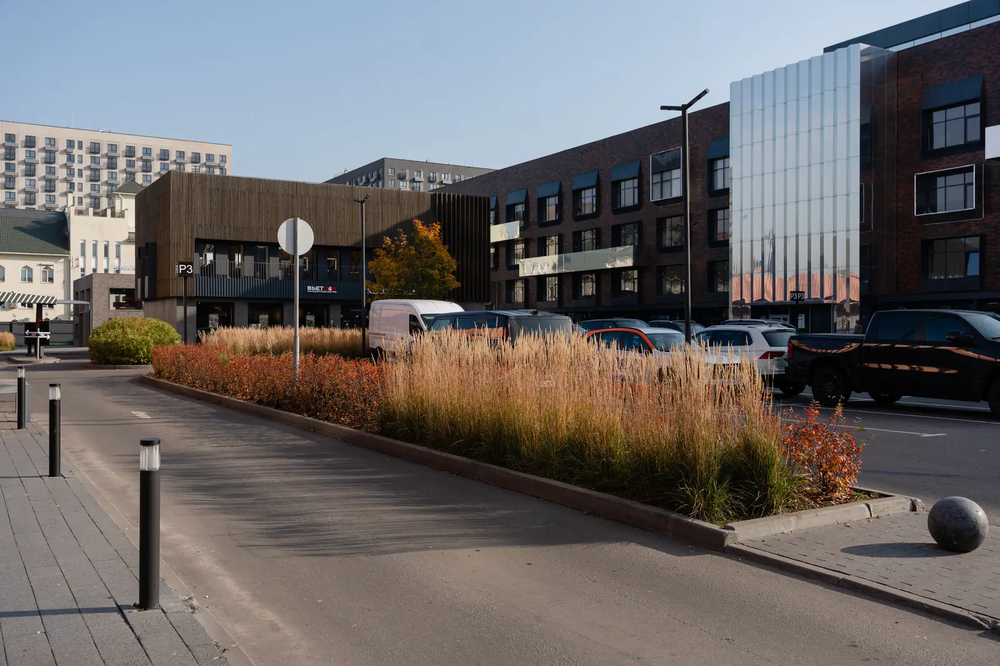
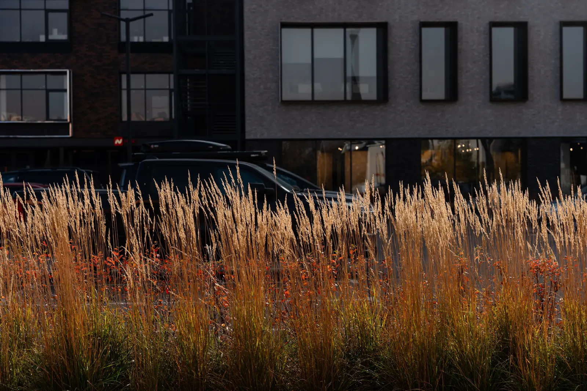
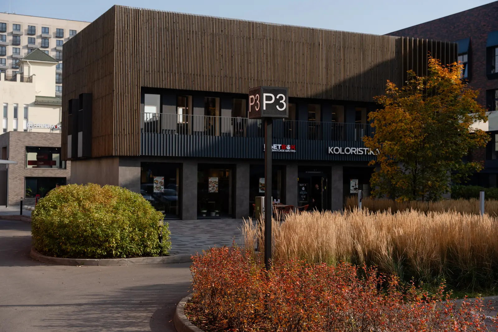
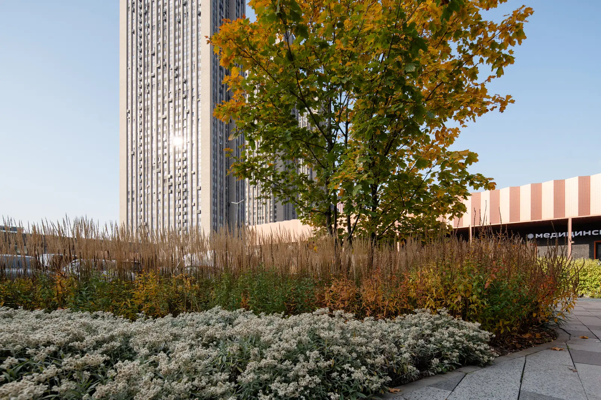
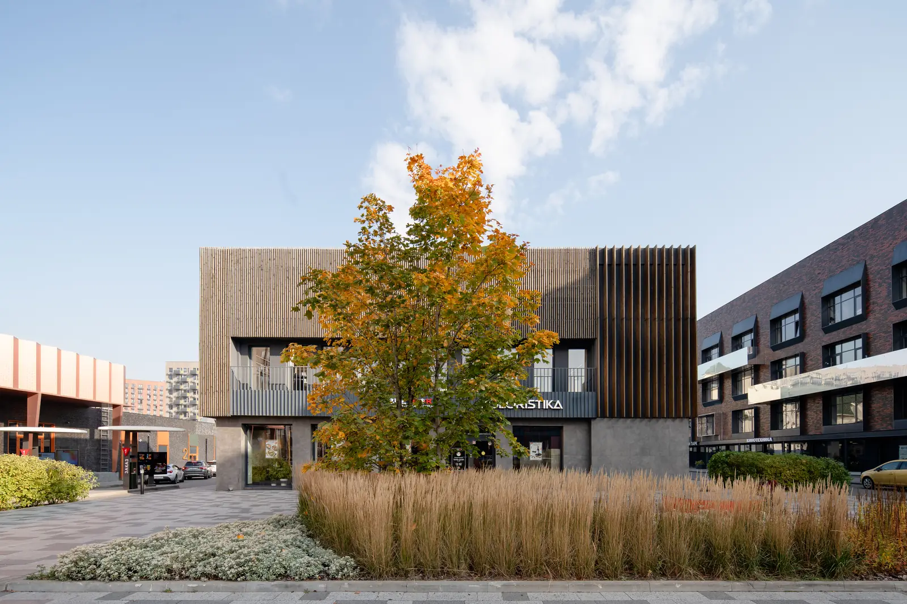
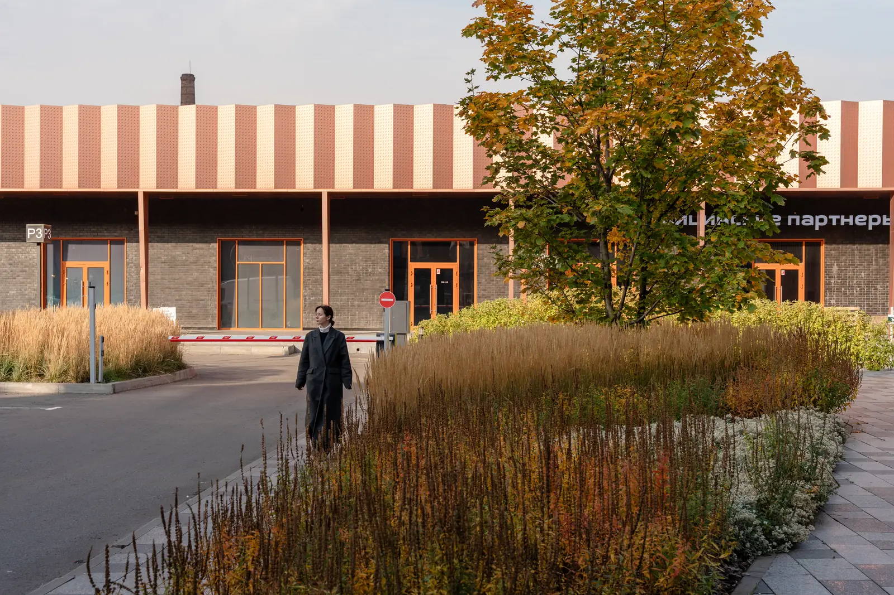

северная площадь
Северная площадь — часть общественных пространств бывшего чугунолитейного завода «Станколит», реализованных по мастерплану tamed.form. Посадки связывают парковку и тротуары вдоль ритейла, формируют её контур и сопровождают пешеходные маршруты.
Из-за подземных сетей деревья здесь почти не высадить, поэтому главным акцентом стал взрослый шестиметровый клён Виери. Под ним — цветник из вейника ‘Karl Foerster’, дербенника ‘Robin’ и анафалиса, высаженных крупными массивами.
Осенью выразительность держат золотистые метёлки и серебристая листва, зимой — красные, зелёные и салатовые ветви дёрена.




